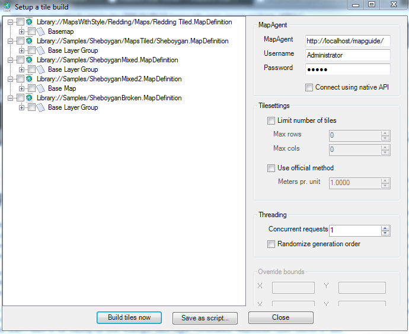

Using MgCooker
Note
A new tile seeder tool MgTileSeeder is in development that will supercede and eventually replace the MgCooker tool. For information on how to use MgTileSeeder, see Using MgTileSeeder
Tiled Maps improve display performance by rendering the maps in tiles and keeping them stored in a special directory known as the Tile Cache. Subsequent views of the same map area will skip the rendering process and serve the already rendered tiles from the Tile Cache which is much faster. Having these tiles pre-generated up front allows you to get a view of the map in a near instant, because the potentially costly rendering operations are avoided.
MgCooker is such a tool to allow you to pre-generate these tiles. MgCooker is available from the Tools menu in Maestro
Note
If you installed Maestro via the installer, MgCooker is also available on the Maestro Start Menu folder.
MgCooker requires you to login on startup. Once logged in, it will show the list of Map Definitions with tiled layers.

From here, tick the Map Definitions and the Base Layer Groups that you want to pre-generate tiles for.
In addition other settings are available for you:
- You can set the upper limit of the number of tiles to generate
- You can customize the tile generation method.
- You can configure how many threads to generate tiles. Each thread effectively simulates an end-user looking at your specified tiled maps. Based on the method chosen, the way the simulated user navigates could be systematic or completely random.
Once you have specified you settings you have the following options:
- Start the tile generation process by clicking Build tiles now. This process can take several hours to several days depending on the size of the maps being pre-generated.
- Save this out to a windows batch file, which will execute MgCooker from the command-line with your specified settings. This is useful for automation via the Windows Task Scheduler